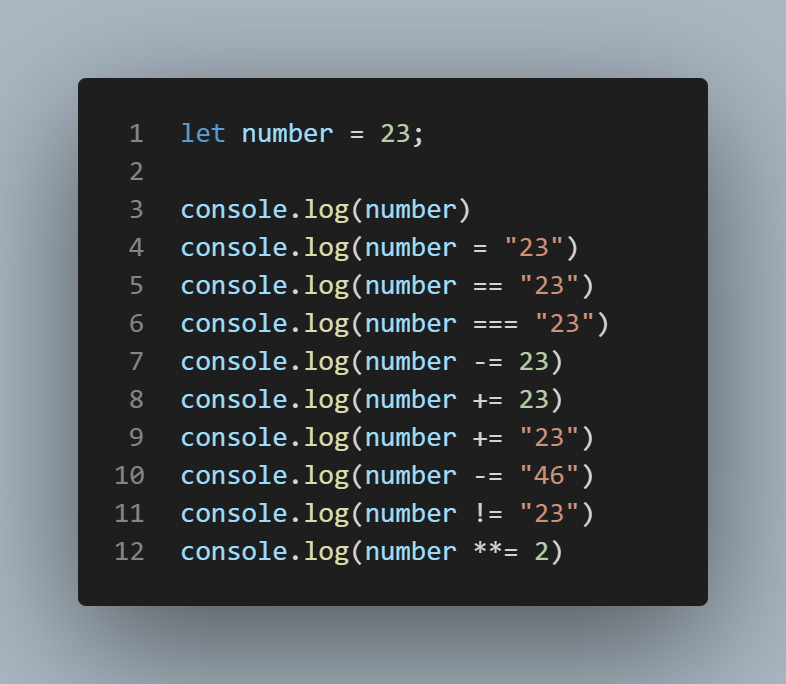

Lav et program, som skriver “Hello World” i konsollen
Lav et program, som skriver “Hello” og på næste linje skriver “World” i konsollen
3.
Lav et program, som skriver følgende i konsollen. →
*
**
***
**
*
Lav et program, hvor i definere en konstant eller variabel og programmet skriver hvilken type det er, i konsollen. (Altså om det er en int, string, bool osv.)
Print svarene på følgende matematiske operationer ved at skrive det direkte ind i Console.log(): fx, Console.log(5 + 5) ⇒ 10 - Ved vi ikke hvad operationen gør, kan vi google den eller finde dem her:
10-5
25/3
25%3
25%2
3**2
Skriv i konsollen kombinationen af de her 2 strings ved brug af deres navn:
let tekst1 = “Hello “
let tekst2 = “ World!”
Udskriv længden af den her string “GF2 Online” - altså antal tegn
Lav et program som skriver et tilfældig tal i konsollen
Find ud af hvad hver linje skriver ud i vores konsol og forklar hvorfor lige præcis det bliver skrevet

Conditionals - If / else statements
I skal skrive et stykke kode som fortæller om et tal (int) er lige eller ulige.
I skal skrive et stykke kode som fortæller om 5 går op i det tal som i vælger (int).
Hvis den går op i det skal i skrive: 5 går op i (det tal i har valgt)
Lav opgaven ↑ igen, men i stedet for selv at vælge et tal skal i lave sådan at den selv vælger et tal mellem 0 og 100.
Lav et program som fortæller jer hvilke af de her 3 tal der er størst.
a = 25; b = 33; c = 12;
Lav et program der fortæller hvor varmt det er ud fra en temperatur. Kategorierne er som følger:
Hvis det er 0° eller under, skal der skrives: Det er frostvejr
Hvis det er mellem 1° og 10°, skal der skrives: Det er meget koldt
Hvis det er mellem 11° og 20°, skal der skrives: Det er koldt
Hvis det er mellem 21° og 30°, skal der skrives: Det er normalt vejr
Hvis det er mellem 31° og 40°, skal der skrives: Det er varmt
Hvis det er 41° eller over, skal der skrives: Det er meget varmt
Lav et program som omformer tal til ugedage ved brug af conditionals, som eksempel nedenunder:
Den 1. dag i ugen er mandag
Den 2. dag i ugen er tirsdag
Den 4. dag i ugen er Torsdag osv.
Simple loops (Uden arrays eller lign.)
Lav et program som skriver alle tal fra 1 til 100 ud i konsollen en efter en.
Lav et program som skrive alle tal fra 1 til 102, på følgende måde
0 1 2
1 2 3
2 3 4
. . .
100 101 102
Lav spillet FizzBuzz, spillet går ud på at man i en rundkreds (loop) skifter til at tælle.
Hvis tallet som man er nået til går op i 3, skal man sige Fizz.
Hvis tallet som man er nået til går op i 5, skal man sige Buzz.
Hvis tallet som man er nået til går op i både 3 og 5, fx 15, skal man sige FizzBuzz.
Hvis tallet ikke opfylder nogle af ovenstående skal man bare sige tallet.
Dette skal vi lave i loop.
I skal lave den både som for-loop og while-loop
Lav et program som udregner det faktorielle af et tal med et loop.
I skal lave den både som for-loop og while-loop
Lav et program som skriver multiplikationstabel for et givet tal:
15 X 1 = 15
...
15 X 9 = 135
Arrays
Skriv “Viborg” i konsollen ved at trække den ud fra følgende array
Erstat den værdi, uden at ændre direkte i array’et, som ikke passer ind, så array’et stemmer:
talrække = [0, 1, 0, 3, 4, 5, 6]
Skriv, i konsollen, den største værdi fra følgende array. Selvfølgelig ikke manuelt.
talrække = [1, 2, 3, 4, 11, 55, 99, 100]
Sorter den her array
talrække = [0, 12, 0, 22, 300, 4, 5]
Sorter den her array i omvendt rækkefølge:
talrække = [0, 12, 0, 22, 300, 4, 5]
Funktioner - Overgang til HTML
Skriv noget kode eller kode sammen med en knap, så i eksekvere følgende funktion:
function myFunction() {
console.log("Hello World")
}
I skal lave en funktion som tager 2 tal og returnerer summen af dem.
Fx (2,5) = 7; (3,18) = 21 osv.
Lav en funktion som returnerer true hvis man skriver “Ja” som input og false ved alt andet
Lav en funktion som fungere som en password-tjekker, i skal definere et password i koden og derefter lave en funktion som kun skriver true hvis man skriver det rigtige kodeord og false hvis det er forkert
Lav en funktion som i opgaven før, men for brugernavn. Forskellen er at et brugernavn ikke er case-sensitiv, altså at den er ligeglad med store og små bogstaver.
Fx hvis brugernavnet et “Mags”, skal den godkende alle måder det er skrevet på uanset om det starter med stort eller ej.
Loops - Arrays og andre datatyper
Lav et program som summere følgende array, uden brug af Aggregat Funktioner:
talrække = [0, 12, 0, 22, 300, 4, 5]
Lav et program som skriver alle værdierne i dette array, ved brug af foreach:
talrække = [0, 12, 0, 22, 300, 4, 5]
Lav et program som returnere indexet af det højeste tal, altså giver dens placering i begge disse arrays
Lav et program som returnere fornavn og efternavn, hvis følgende er rigtige
Over 30
Blå, grønne eller røde øjne
Hvis en eller flere af de kriterier ikke er mødt skal personen ikke “udskrives”
Lav et program, som skriver følgende i konsollen.
Den her gang skal det være med et loop, som skrive linjerne enkeltvis.
Man skal hurtig og let kunne ændre hvor mange linjer den skriver.
Man skal bruge 2 loops til opgaven.
*
**
***
**
*
Ved brug af object formatet i JS, lav et objekt på følgende måde: